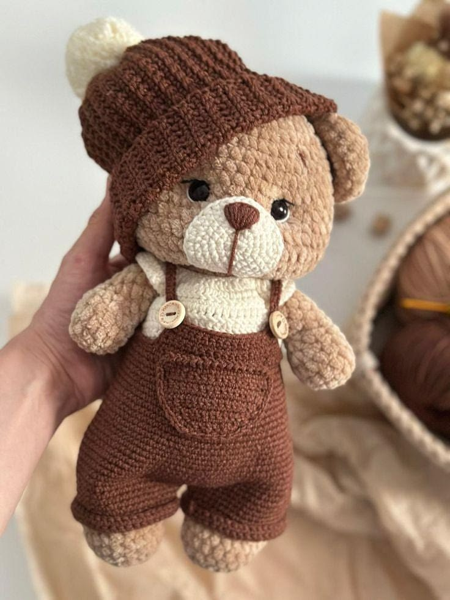

A handmade journal · crochet & creativityMade with
Made with
little loops.
A colorful little corner for crochet creations, the stories behind them, and the tutorials that inspire each stitch.


one stitch at a timeMADE BY HAND · INSPIRED BY CREATIVITY · SHARED WITH LOVE